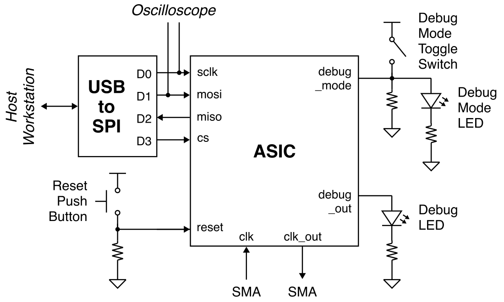
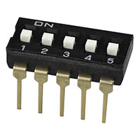

Lab 5: Accelerator Testing
In the previous labs you wired up the power and signal I/Os, tested getting a clock in and out of your chip, and tested your SPI interface. In this lab you will wire up the debug mode input to a switch so you can switch between debug mode and accelerator testing mode. Then you use the xmsgs created in the first lab to test your accelerator at nominal voltage and frequency before sweeping both voltage and frequency to create a shmoo plot.
1. Signal I/O Routing
In the previous lab, we connected the following signal I/O pins:
- reset connected to a push button
- cs, sclk, mosi, miso connected to the USB-to-SPI adapter
- debug_out connected to an LED
- gp0, gp1 connected to ground
- debug_mode connected to 3.3V
We now want to connect the debug_mode input to a toggle switch so we can switch between debug mode and accelerator testing mode. We also want to connect the debug_mode input to an LED so we can easily know if we are in debug_mode or not.
As a reminder, here is the spreadsheet which maps the chip pin out to the pin numbers on the breadboard:
Here is a system-level diagram of the signal I/O routing for this lab:

1.1. Wire Debug
Remove the 5-position DIP toggle switch from your component bin and find a good spot for it on your breadboard.

Pick one of the positions to use as the debug mode toggle switch. The debug mode input is active high so we will need a pull-down resistor to control the debug mode input for our chip. When the toggle switch is open, the resistor will pull down the debug mode pin to 0V. When the toggle switch is closed, we will pull up the debug pin pin to 3.3V.
Then connect the debug mode input to an LED (use a different color from what you used for the debug output!) in series with a 1kOhm resistor which in turn connects to ground.
2. SPI Testing
We should test the SPI interface again just to make sure everything is still working. Use a USB-C cable to connect the SPI adapter on the breadboard to the top-left USB port of the workstation. You must use the top-left USB port of the workstation; any other port will not work! Then use the other USB-C cable to connect the chip tester board to the workstation.
2.1. Clone Repo
We now need to get the ece6745-check-xmsgs script from ecelinux onto
the workstation. This requires multiple steps.
-
Step 1. Click Microsoft Edge on the desktop to open a web-browser on the workstation to log into GitHub and then find your repository
-
Step 2. Start PowerShell by clicking the Start menu then searching for Windows PowerShell
-
Step 3. Use the following command to change to your home directory on the workstation in the lab (where
netidis your Cornell NetID)
- Step 4. Clone your repo onto the workstation by using this command in
PowerShell (where
netidis your Cornell NetID, notice we are using https!):
If you already cloned the repo, then you may not need to do anything or you might need to do a pull if there are any changes.
-
Step 5. In the Connect to GitHub pop-up, click Sign in with your browser
-
Step 6. You may be asked for your GitHub username again and you may be asked to authorize the Git Credential Manager; click authorize git-ecosystem
-
Step 7. Change into your repo, checkout the tapeout branch, and using
treeon the workstation:
2.3. Using Python Script
Make sure the debug mode toggle switch is set such that the debug mode input is at 3.3V and the debug mode LED is on. Change the clock frequency to 10MHz using the following steps:
- Press the Clk button
- Use the numbers and Dot button to enter 10
- Press the Enter button
- Press the Chip button
- Verify that the chip tester board clk/out and clk/in show 10MHz
In PowerShell on the workstation, change into the xmsgs subdirectory
and then run the ece6745-check-xmsgs script with the --debug-mode
command line option to write/read data to/from the debug unit like this:
% cd C:\Users\netid\project2-groupXX\xmsgs
% python ece6745-check-xmsgs --verbose --debug-mode 1
% python ece6745-check-xmsgs --verbose --debug-mode 0
% python ece6745-check-xmsgs --verbose --debug-mode 1
% python ece6745-check-xmsgs --verbose --debug-mode 0
% python ece6745-check-xmsgs --verbose --debug-mode 0xdeadbeef
Verify the debug output LED is toggling. Now flip the debug mode toggle switch so we are no longer in debug mode and confirm the debug mode LED is off. Press the reset butto to reset your chip.
3. Accelerator Testing
Now that we know the SPI is working, we can test the actual accelerator using the xmsgs files we generated in Lab 1. First we need to figure out what the nominal frequency is for your chip. This depends on what clock constraint was used when you met timing before taping out your chip. Keep in mind that we had to respin some student's tapeouts after we fixed the power grid issue last spring, and thus the final clock constraint might be different from what you remember. This spreadsheet shows you the clock period which was used for the final tapeout of each group:
Recall that we used three "corners" when closing timing for your chip:
| Corner | Temperature (C) | Temperature (F) | Voltage |
|---|---|---|---|
| Typical | 25 | 77 | 1.80 |
| Worst | 125 | 257 | 1.62 |
| Best | 0 | 32 | 1.98 |
In the lab, our conditions will probably be close to the typical-case corner. The spreadsheet shows the slack at each corner. To close timing we needed to meet the setup time constraint at the worst-case corner, but this means there will be significant slack at the typical- and best-case corners. The spreadsheet also shows the effective frequency at each corner (i.e., 1/(clock_period - slack)).
Let's use the typical frequency and 1.8V as the nominal operating conditions. Go ahead and change the clock frequency to the typical frequency for your group, and make sure that the chip tester board clk/out and clk/in show this frequency.
Now pick the simplest xmsg file you have. Let's assume it is called
simple.xmsgs. Then use the ece6745-check-msgs script to replay the
accelerator requests and check the accelerator responses.
Try a few more and then try all of them at once.
Some groups might need to reset the chip between xmsgs
Some groups learned during lab 1, that their accelerator actually only works if it is reset before each xmsg. The reason they did not catch this issue during pre-silicon verification is because our test framework resets the chip before each test case. These groups will need to spend time modifying their chip testing setup as follows:
- Wire up the reset input to one of the GPIO pins on the USB-to-SPI adapther instead of to the push button
- Modify the
ece6745-check-xmsgsscript to toggle this GPIO pin high to reset the chip before each xmsgs test - Look at the reset pin on the scope to make sure that everything is working
4. Shmoo Plot
Now that you know your chip works at nominal frequency and voltage we want to make a shmoo plot to better evaluate the entire operating range of your chip. A shmoo plot is a 2D grid with voltage on the X-axis and clock frequency on the Y-axis. Each shmoo plot entry indicates whether or not your chip passes all your tests at the given voltage and frequency. Here is a template you can use for your shmoo plot:
Make a copy of this Google spreadsheet. Start in the bottom left corner with the first column at the lowest voltage (1.4V) and and the slowest clock frequency (1MHz). Run your tests then enter one of three values:
- P = all tests pass
- x = some tests pass and some tests fail
- F = all tests fail
Then gradually increase the frequency from 1MHz to 200Mhz. At each frequency rerun all your tests and update the corresponding shmoo plot entry. Once you have finished the first column, then increae the voltage to 1.5V and repeat the experiments.
Your chip will not pass the tests at 1MHz. Revisit Lab 4 to understand why. Remember what we learned last spring about static timing analysis to understand what region of the shmoo plot you might expect the chip to pass and what region of the shmoo plot you might expect the chip to fail.
Huge Milestone!
Your chip is now fully functional at nominal frequency and voltage, and you have also carefully evaluated its functionailty across a broad operating range. This is a huge accomplishment!